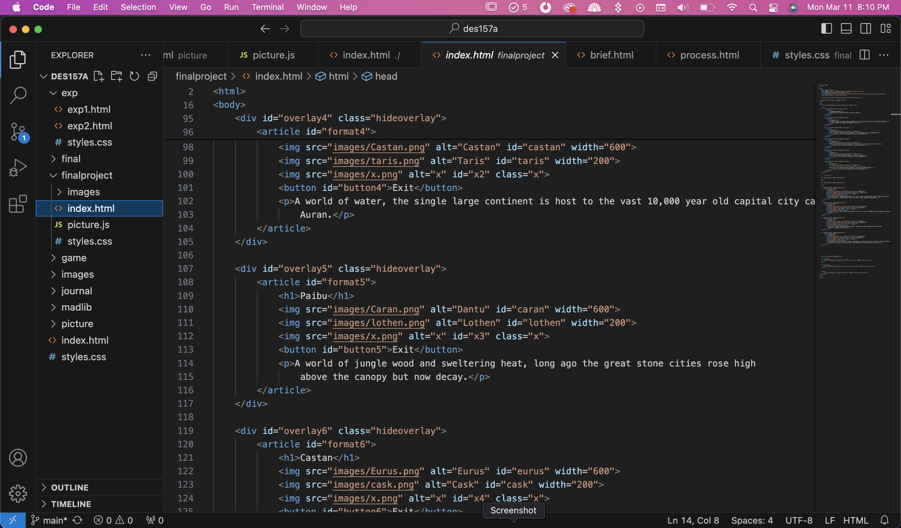

Although I had planned to utilize our DES157A teaching assistants to fulfill my expert review, I unexpectedly encountered a family friend and managed to glean his insight on my final project. I consider the man I spoke to, George Bellias, a role model and expert because he is a man of many talents. He began his career in the realm of art and graphic design before transitioning towards a development focus, nowadays he does visual animation. For any question in the category of design, he seems to have experience and an answer.
Interestingly, the first thing he told me to improve within my code is my alt tags. I tend to breeze through them, using only a single word or two. But apparently the two purposes are for search engine optimization (SEO) and accessibility, both of which benefit from slightly more information. My design is very unresponsive to different screen sizes, a fact that I went in with full awareness of. However, multiple times he mentioned the need for it. I guess included within this is my use of absolute positioning. Most of my elements within this project are placed using this style, but when it comes to responsiveness in design this isn’t a good habit. My CSS also has a number of repeated styles, where I could simply utilize a class rather than a number of identical IDs.
